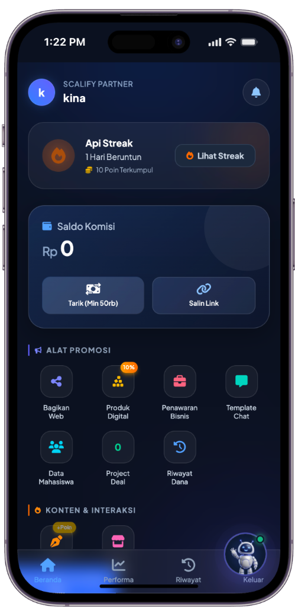
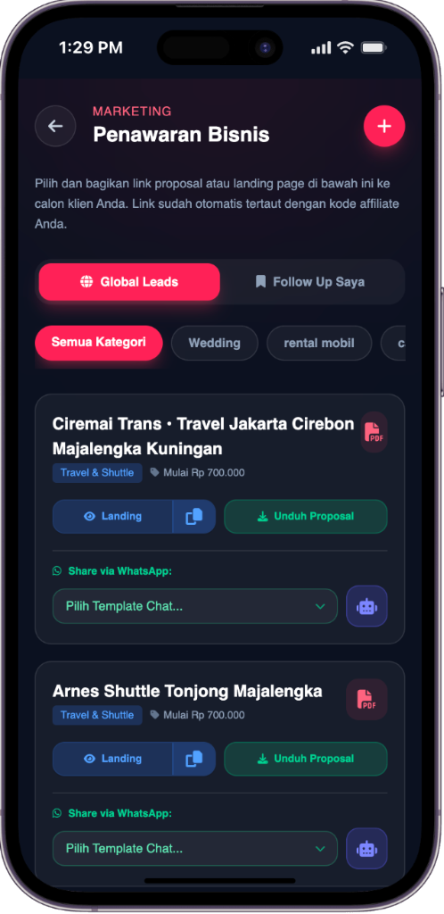

KEMITRAAN EKSKLUSIF SCALIFY AGENCY
Solusi Digitalisasi Bisnis (UMKM & Korporasi) & Bimbingan Sistem Skripsi Mahasiswa
1. Siapa Kami? (Tentang Scalify)
Scalify adalah agensi digital profesional yang berfokus pada pembuatan Website, Aplikasi Custom, dan Sistem Integrasi (AI/Automation).
Misi Kami: Membantu transformasi digital bisnis serta mendampingi mahasiswa menyelesaikan tugas akhir/skripsi berbasis sistem secara cepat, rapi, dan berstandar tinggi.
Fokus Layanan Kami:
- Company Profile & Landing Page: Website representatif profesional untuk membangun kredibilitas bisnis dan halaman konversi promosi penjualan.
- E-Commerce & Kasir / POS: Toko online mandiri lengkap dengan katalog produk serta sistem kasir, stok barang, dan laporan penjualan.
- Sistem Internal & Automasi AI: Aplikasi kustom dan integrasi otomasi AI untuk efisiensi alur kerja operasional perusahaan.
- Web & Sistem Skripsi Mahasiswa: Membantu mahasiswa membuat website/aplikasi dengan implementasi berbagai metode ilmiah (SPK, SCM, CRM, Data Science, Forecasting / Peramalan, Machine Learning, hingga kelengkapan naskah skripsi).
2. Kenapa Harus Bergabung Menjadi Partner Kami?
Kami mencari partner strategis (Sales/Marketing Partner) untuk memperluas jangkauan pasar. Keuntungan yang Anda dapatkan:
Dapatkan Rp 200.000 untuk setiap 1 klien yang deal. Dibayarkan langsung setelah pembayaran DP dari klien diterima.
Anda tidak perlu mikirin koding, desain, atau pengerjaan project. Tim Scalify yang urus 100%.
Dibekali Mobile Web Khusus Partner berisi katalog demo & proposal harga interaktif. Tinggal share link!
Bisa dikerjakan kapan saja, di mana saja, tanpa terikat jam kerja kantor.
3. Cara Kerja Kemitraan (3 Langkah Mudah)
Tunjukkan Mobile Web Partner (berisi demo & proposal harga) kepada pemilik bisnis atau relasi Anda.
Arahkan klien melihat demo website langsung dari web mobile atau diskusikan kebutuhan mereka.
Setelah DP dari klien masuk, komisi Rp 200.000 langsung cair ke rekening Anda!
4. Panduan Penggunaan Aplikasi Mobile Web Partner
Tools Jualan di SmartphoneKami sudah menyiapkan Aplikasi Mobile Web khusus agar Anda bisa langsung berjualan dengan percaya diri tanpa ribet bawa brosur fisik. Buka link web partner yang diberikan tim Scalify di browser HP Anda.

Berfungsi sebagai absensi digital partner. Perlu diaktifkan / diklaim setiap hari untuk mencatat keaktifan Anda di sistem.
Disediakan menu lengkap sebagai *tools* pendukung untuk membantu Anda mempromosikan layanan Scalify ke calon klien dengan mudah.

- a. Icon Tambah (+): Untuk menambahkan daftar target bisnis baru yang akan Anda follow up.
- b. Tombol "Landing": Untuk melihat demo web yang sudah jadi. Tinggal salin tautan (copy link) lalu kirim ke target bisnis.
- c. Unduh Proposal: Untuk menyimpan dan mengirim proposal penawaran resmi dalam bentuk dokumen PDF.
- d. Chat WhatsApp: Tombol kirim pesan langsung ke WhatsApp calon klien dengan template pesan otomatis.
- e. Icon Robot (AI Assistant): Jika bingung merangkai kata-kata, klik icon robot untuk membuat template pesan chat penawaran secara otomatis!
Cukup buka menu "Demo" di HP Anda ke calon klien sambil bilang:
"Mau dibuatkan website profesional kayak gini buat bisnis kakak/bapak/ibu?"
Hubungi tim utama Scalify sekarang untuk mendapatkan akses link Mobile Web Partner Anda dan mulai kumpulkan komisinya!